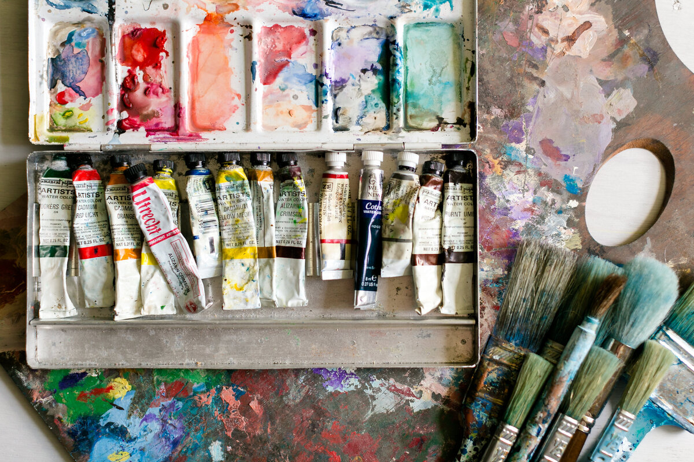
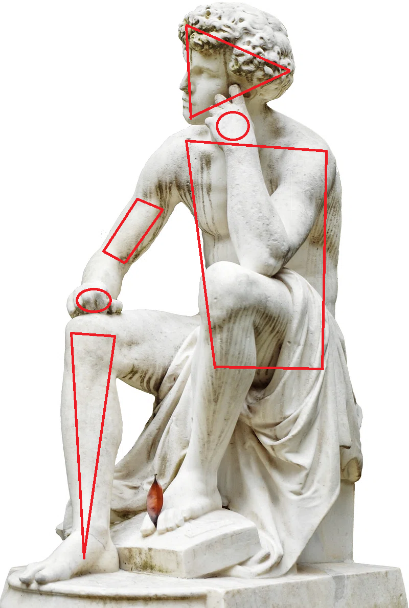
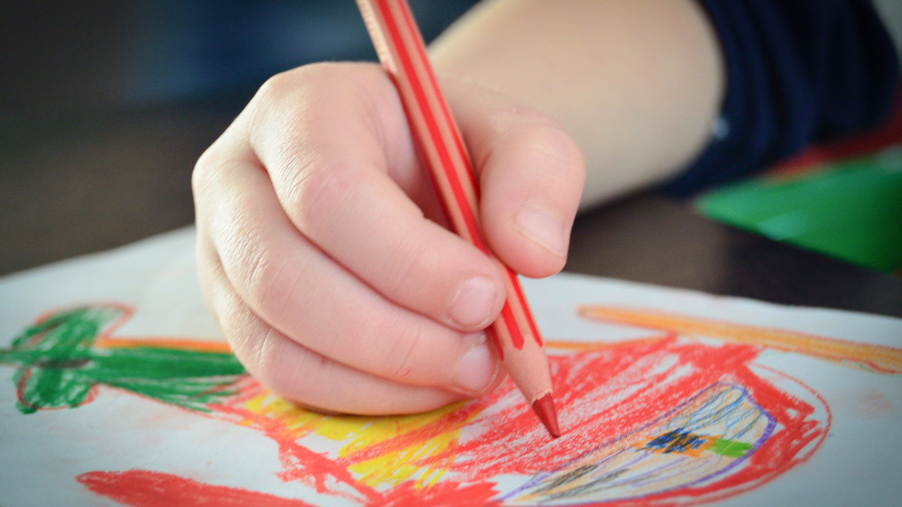
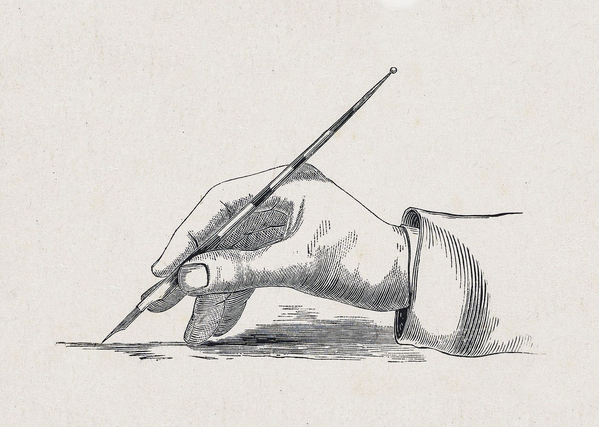

Tip 1
Medium
When it comes to art you can choose whatever medium you want. A medium is how you are going to display or create your art as a whole, this can be traditional, like on paper, virtual like through computer, you can use paper, canvas, mspaint, krita, whatever it is you desire. Using whatever you want brings a sense of freedom to your art, you are allowed to create whatever it is you like, it doesn't have to be perfect, it just has to be you.
Tip 2
How to start
When it comes to any form of art, you have to learn about the basic fundamentals of "shapes". Shapes in art are the pure building blocks of what makes art, be it from the shape of a person, the structure of code, the data of a model, it all has shapes within it's form. The statue depicted is a provided example, it's form is boiled down to squares, triangles and circles, these building blocks and be reforms and reused for creating something new as well, it's the general basis of all things.
Tip 3
Practice
When it comes to art or applying yourself to anything, practice is always a habit that needs to be implemented. Practice alone isn't the defining aspect of becoming a great artist, it's the show of will and determination to become better. However first you must apply basics and knowledge, practice at it, and then you will flourish. Drawing, even a little bit every day, or when you can will keep your mind refreshed and growing, it's a dedication.
Tip 4

Art in other places
When it comes to art it isn't just about putting something on a canvas to create, you can apply yourself in many other fields. As mentioned before coding is a way to create art as well! You are able to make something out of the words you type, and form a structure that has artistic value. There are other applications of course too. Clay modeling is one that is well known, taking what you have to form something entirely new. There is also photography! Photography is the art of capturing a moment in time, how you angle the shot, manipulate the photo a bit, and create an artpiece out of the world you've captured.
Step 5
Resources
Something very important when it comes to art, is finding resources. Resources include books, classes and online videos! I highly recommend watching other artists tutorials in order to get your start. Credit to NIRO, the artist in the video provided, he talks and provides information about how to get your start as an artist, he talks about perspective, line weight, anatomy and more.
Step 6
Have fun and do your thing!
I will reiterate it many times, and can't stress it enough, but doing art for yourself and for the fun of it is absolutely essential, it's what gives so much purpose and spirit behind art as whole, it's about doing what you want, and how you want it. So please, just have fun and find what fits you best, have fun!